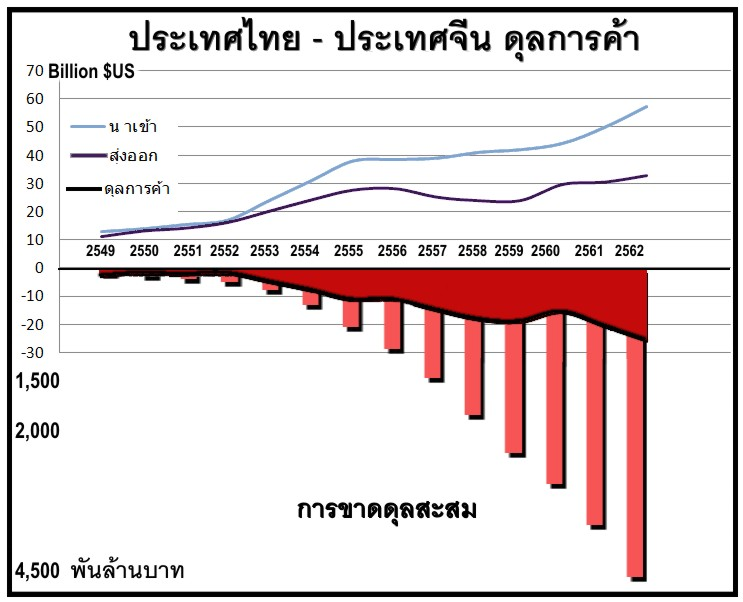

✘วัตถุประสงค์ที่แท้จริงของข้อตกลงการค้าเสรี!
✘ทำอย่างไรจึงจะช่วยประเทศไทยให้รอดพ้นจากความหายนะทางเศรษฐกิจ และได้รับอำนาจอธิปไตยของประเทศกลับคืน!
✘ทำอย่างไรจึงจะเตรียมพร้อมรับมือ กับการล่มสลายทางเศรษฐกิจที่กำลังจะมาถึง และยังสามารถทำกำไรจากสิ่งที่เกิดขึ้นได้!
✘ทำอย่างไรจึงจะกระตุ้นเศรษฐกิจให้ดีขึ้น โดยไม่ต้องใช้เงินสักบาท! ◄
ตั้งแต่การลงนามในข้อตกลงการค้าเสรีระหว่างไทยกับจีน ความไม่สมดุลในการค้าระหว่างประเทศเพิ่มขึ้นกว่า 600 พันล้านบาทต่อปี กล่าวคือ ทุกๆปีจีนได้รับกำไรจากไทย600พันล้านบาท ไทยขาดดุลทางการค้าตั้งแต่ปี 2546 เป็นต้นมา รวมเป็นเงินทั้งสิ้น 4.8 ล้านล้านบาทซึ่งเกือบถึง 50% ของจีดีพีของไทยทั้งปี

มีการโต้แย้งว่าสิ่งนี้ได้ถูกชดเชยบางส่วนจากการท่องเที่ยว แต่หากดูจาก 'ยอดดุลการค้าระหว่างประเทศ' เป็นปัจจัยสำคัญ จะทำให้มองได้ว่า:
1. ผู้ผลิตคนไทยกำลังถูกทำลาย ด้วยสินค้าราคาถูกจากจีนจำนวนมากมายมหาศาล และการนำเข้าสินค้าที่ราคาต่ำกว่านี้ ทำให้ผู้ผลิตคนไทยไม่มีออเดอร์สินค้า
2. จีนสามารถจะปิดการหลั่งไหลของนักท่องเที่ยว ที่จะเข้ามายังประเทศไทยได้ในทันที หากพวกเขาต้องการ แต่ฐานการผลิตของไทยจะไม่สามารถสร้างขึ้นมาใหม่ได้อีกเมื่อมันหายไป ( จะเห็นได้จากสหรัฐฯ ที่กำลังเรียนรู้บทเรียนที่เจ็บปวดในขณะนี้ หลังจากหลายทศวรรษที่ได้ย้ายฐานการผลิต(เอาท์ซอร์ส)ของสหรัฐฯไปยังประเทศจีนเพื่อผลกำไรที่รวดเร็ว!)
3. ประเทศไทยได้รับผลกระทบอย่างรุนแรง คือ :
-
1. การสูญเสียทรัพย์สมบัติสู่ประเทศจีน (คือการสูญเสียจากการเข้ามาเทคโอเวอร์ สิ่งก่อสร้าง ที่ดิน ธุรกิจสำคัญๆทั้งหลาย รวมทั้งผลิตผลทางการเกษตรของไทย
-
2. คนตกงานเป็นจำนวนมาก เนื่องจากการสูญเสียการผลิตของโรงงานในประเทศ
-
3. เนื่องจากพวกเขาตั้งใจผลิตสินค้าที่ด้อยคุณภาพ ใช้งานได้ไม่นาน และจะต้องซื้อเปลี่ยนอย่างต่อเนื่อง ทำให้ไทยต้องออเดอร์สินค้าเมดอินไชน่าอยู่ตลอดเวลา ในขณะที่สินค้าไทยที่คุณภาพดีกว่า และแม้จะราคาแพงกว่า แต่ใช้งานได้ยาวนานกว่า ซึ่งเทียบแล้วจะถูกกว่าในระยะยาว กลับไม่ได้ขาย!!
“ พึงตระหนักไว้เสมอว่า มันเป็นไปไม่ได้เลยที่จะทำการค้า แบบที่จะได้รับความยุติธรรมกับประเทศจีน ”
ดังจะเห็นได้จากความจริงดังต่อไปนี้
-
1. ประเทศจีนกำลังทุ่มตลาดสินค้าในตลาดไทยอย่างมหาศาล โดยการขายสินค้าในราคาต่ำกว่าต้นทุนการผลิต เพื่อทำลายผู้ผลิตไทยโดยเจตนา! (สิ่งนี้เคยเป็นการปฏิบัติที่ผิดกฎหมาย แต่ตอนนี้เป็นกลยุทธ์ที่พวกเขาต้องการ!) และเมื่อได้ครองตลาดอย่างสมบูรณ์ในวันข้างหน้า เศรษกิจทุกอย่างก็จะอยู่ภายใต้อำนาจ และการควบคุมของเขา
-
2. เศรษฐกิจจีนมีการละเมิดลิขสิทธิ์ที่ผิดกฎหมายคาดว่าจะสูงถึง 25%
-
3. สินค้าจีนมีคุณภาพต่ำกว่าปกติ ซึ่งพวกเขามักจะไม่ให้ความสำคัญกับ 'คุณภาพ ขอให้ขายได้' แต่อย่างไรก็ตามผู้บริโภคในประเทศส่วนใหญ่ ก็ซื้อโดยง่าย เพราะราคาถูก!
-
4. สินค้าจีนส่วนใหญ่ ในร้านค้าปลีกของเรามีจำนวนมาก ที่ไม่ได้ระบุว่าผลิตในประเทศจีน และบ่อยครั้งที่พวกเขาติดบาร์โค้ดของไทย เพื่อชักนำผู้บริโภคให้เข้าใจผิดว่าผลิตในประเทศไทย
-
5. บริษัทค้าปลีกขนาดใหญ่ของไทย มีการปกปิดแหล่งผลิตของผลิตภัณฑ์โดยใช้บาร์โค้ดภายในของตนเอง ซึ่งไม่มีการแจ้งแหล่งผลิตและไม่ติดฉลากแหล่งที่มาของผลิตภัณฑ์
-
6. ประเทศไทยโชคไม่ดี ที่จีนมีตัวแทนหลายล้านคนในประเทศไทย ซึ่งได้ยึดครองเศรษฐกิจของประเทศไทย และตอนนี้ได้ประกาศสงครามกับเจ้าของประเทศ : พวกเขาไม่ให้ความเคารพต่อประเทศไทยอย่างแท้จริง สินค้าพวกเขาได้ทดแทนสินค้าไทย และชาติอื่นเกือบ 100% ในกลุ่มสินค้าขายปลีก และในขณะนี้ สินค้าขายส่งจำนวนมาก กำลังถูกขนมาดั๊มในเมืองไทยมากขึ้นๆทุกวัน
-
7. จีนมีเงินทุนสำรองต่างประเทศหลายล้านล้านดอลลาร์ อยู่ในอันดับต้น ๆ จึงใช้ประโยชน์ทางการเงินที่มีเหนือกว่านี้ ในการเจรจาต่อรอง เพื่อรับข้อได้เปรียบที่ไม่เป็นธรรม กับประเทศอื่น ๆ
-
8. แรงงานจำนวน 6-8 ล้านคน มาจากชนกลุ่มหนึ่ง ที่ถูกกักขังไว้ใน Laogai Camp คือ กลุ่มที่ถูกบังคับให้ทำงานหนักวันละถึง 20 ชั่วโมง และทำงานเสี่ยงภัยทุกอย่าง โดยได้ค่าแรงเพียงอาหารเล็กๆน้อยๆ และนี่เป็นอีกเหตุผลหนึ่งที่ทำให้จีน ได้ผลิตสินค้าที่ราคาถูกจำนวนมากๆ อย่างที่ส่งมาดั๊ม มาตัดราคาสินค้าในเมืองไทย และประเทศต่างๆทั่วโลก เสื้อผ้า,ร้องเท้า, กระเป๋า ,เครื่องใช้ไฟฟ้า ,อุปกรณ์เครื่องมือช่าง ,อุปกรณ์ทางการเกษตร และอื่นๆอีกมากมาย
เหล่านี้มาจากความลำบากแสนเข็ญ มาจากความตายของชนกลุ่มหนึ่ง ที่ถูกบังคับทำงานเยี่ยงทาส จะมีคนไทยกี่คนที่รับรู้เรื่องนี้!!!
https://laogairesearch.org/
(อ่านเพิ่มเติมเกี่ยวกับการลงนามในข้อตกลงเขตการค้าเสรีนี้โดยทักษิณด้านล่าง!)
✘ การริเริ่มของชาวจีน OBOR
จะเห็นได้ว่า ประเทศที่ร่วมทำสัญญา ภายใต้โครงการ One Belt One Road, OBOR กับประเทศจีน สุดท้ายแล้วสิ่งที่ประเทศเหล่านั้นได้รับคือ ความขุ่นเคืองใจ ความหายนะของประเทศ
ดังจะเห็นได้จากบทเรียนที่เกิดขึ้น......
จากกัมพูชาถึงปากีสถาน, จากพม่าไปจนถึงศรีลังกา, จากคีร์กีซสถานถึงอุซเบกิสถา, จากโปแลนด์ไปยังฮังการี
... ผู้คนในท้องถิ่นกำลังจะถูกบดขยี้, ถูกโกง, ถูกขับไล่ไร้ผืนแผ่นดินที่อยู่ และไร้บ้าน!
-
• ในปากีสถาน ชาวจีนสร้างถนนจากจีน ไปยังท่าเรือกวาดาร์ ซึ่งทำให้พวกเขาสามารถเข้าถึงทะเลอาหรับ และมีแนวโน้มที่จะถูกเบี่ยงเบนไปสู่สถานที่ปฏิบัติการทางทหาร! คนในท้องถิ่นไม่เห็นด้วยอย่างสิ้นเชิง แต่เมื่อทางรัฐบาลได้ตกลงทำโครงการขนาดใหญ่นี้ไปแล้ว ผลที่เกิดขึ้นขณะนี้คือ ประชาชนประสบกับการถูกเลือกปฏิบัติ การถูกขับไล่ และความพินาศทางเศรษฐกิจ
-
• ในพม่า จีนมีสัญญาจ้างโครงการสร้างเขื่อนในแม่น้ำอิระวดี เพื่อผลิตพลังงาน แต่จีนจะได้รับ 90% ของการผลิตไฟฟ้า เข้ามาเป็นผู้เชี่ยวชาญของโครงการ และเป็นเสมือนเจ้าของโครงการ ที่จะได้รับผลประโยชน์ในโครงการนี้ตลอดไป!
-
• ในศรีลังกา ชาวจีนเข้ายึดท่าเรือ Hambantota ด้วยสัญญาเช่า 99 ปี ซึ่งตอนนี้พวกเขาน่าจะใช้เป็นสถานที่ปฏิบัติการนอกชายฝั่ง และท่าเรือทหาร นักการเมืองในศรีลังกาที่ทุจริต ได้ทำสัญญากับจีน ในการสร้างท่าเรือ โรงพยาบาล สนามบิน และถนน ซึ่งตอนนี้ไม่ได้ใช้ประโยชน์ ใดๆเลย สิ่งเหล่านั้นถูกทิ้งร้างว่างเปล่า และทุกอย่างนั้นถูกสร้างขึ้นโดยชาวจีน ด้วยทุน แรงงาน และวัสดุจากประเทศจีน แล้วผลก็ตกอยู่ที่ชาวศรีลังกา ที่มีหนี้ก้อนใหญ่กับจีน และผลประโยชน์เป็นศูนย์! โชคร้ายไปกว่านั้นในปัจจุบันจีนออกกฏ ไม่อนุญาตให้ชาวศรีลังกาในท้องที่ เข้ามาในท่าเรือแห่งนี้ มีเพียงบุคลากรจีนเท่านั้นที่ได้รับอนุญาตให้เข้า แม้จะเคยให้คำสัญญาว่า เจ้าของที่ดินที่ถูกบังคับให้ออกจากที่ดิน จะได้งานทำที่ท่าเรือแห่งนี้....
ผลที่ได้รับคือ ศรีลังกาสูญเสียอำนาจอธิปไตยให้แก่จีน กลายเป็นหนี้ และเสมือนทาสรับใช้ไปอีกนาน.....
-
• ในแคนาดา แม้ว่าจะอยู่นอก OBOR แต่มีความเกี่ยวข้องอย่างมาก กับวิธีการทำงานของชาวจีน พวกเขาได้ทำสัญญาร่วมในการสร้างสิ่งอำนวยความสะดวก และท่อส่งก๊าซหุงต้มตลอดแนวท่อ ผ่านแผ่นดินชนเผ่าอินเดียนซึ่งเป็นชนเผ่าพื้นเมือง ซึ่งการสร้างในครั้งนี้ ชนเผ่าพื้นเมืองพยายามคัดค้าน เพราะไม่ต้องการสละที่ดินในประเทศของตนให้กับบริษัทต่างชาติ เป็นเหตุให้ คนพื้นเมืองเป็นร้อยเป็นพันต้องตายหมู่ และถูกคว้านอวัยวะเพื่อนำไปจำหน่าย
หมายเหตุ ; การคว้านเก็บอวัยวะเป็นวิธีปฏิบัติที่รัฐบาลจีน และทหาร กำลังทำเพื่อประชาชนจำนวนมากของพวกเขา ในจีนมีการปลูกถ่ายอวัยวะ 100,000 ครั้งเป็นประจำทุกปี ในขณะที่วัฒนธรรมจีน พวกเขามีความเชื่อว่า การบริจาคอวัยะหรือถ้าถูกตัดอวัยวะออกจากร่างกาย ชีวิตหลังความตายก็จะไม่มีอวัยวะส่วนนั้น มีหลักฐานเพียงพอว่านักโทษทางการเมืองสมาชิกฝ่าหลุนกง และชนกลุ่มน้อย เช่น ทิเบต ชาวอุยกูร์ ฯลฯ ถูกประหารชีวิตอย่างโหดร้าย(การสังหารหมู่) เพื่อการซื้อขายอวัยวะ( ผู้ได้รับผลกำไรมหาศาลคือเจ้าหน้าที่รัฐของจีน)
(นักวิจัยคาดการณ์ว่ามีผู้ที่ตกเป็นเหยื่อถึง 1.5 ล้านคนที่โดนเก็บเกี่ยวอวัยวะเพื่ออุตสาหกรรมการปลูกถ่ายอวัยวะของจีน News.com.au 3 มิถุนายน 2017)
-
Bloody Harvest: Organ Harvesting of Falun Gong Practitioners in China; David Matas
-
The Slaughter: Mass Killings, Organ Harvesting and China's Secret Solution to its Dissident Problem; Ethan Gutmann
-
Medical Genocide: Hidden Mass Murder in China's Organ Transplant Industry; Vimeo
-
https://www.theepochtimes.com/china-hospital-built-for-murder_1958171.html
-
https://endtransplantabuse.org/highlights-china-tribunal-judgement-delivered/
ด้วยสาเหตุการตายหมู่ของชนเผ่าพื้นเมืองจำนวนมากนี้ เป็นผลให้ Lu Shaye อดีตเอกอัครราชทูตจีนในแคนาดา, WangDongjin ซีอีโอของ Petrochina Ltd. , Jilin Fu ซีอีโอของ Petrochina Canada Ltd. ได้รับการเรียกตัวจาก ‘International Tribunal of Crimes of Church and State’, ITCCS เพื่อไปให้ปากคำเกี่ยวกับการฆาตรกรรมหมู่ที่เกิดขึ้นพร้อมๆ กับการสร้างท่อส่งก๊าซครั้งนี้
แคนาดาสูญเสียอำนาจอธิปไตยให้กับประเทศจีนไปแล้ว โดยการมีทหารจีนไปประจำการอยู่ในประเทศ เพื่อปกป้องการลงทุนของจีนที่นั่น การพัฒนาประเทศกลายเป็นลางไม่ดีไปซะอย่างนั้น เมื่อผู้จ่ายเงินลงทุนกลายเป็นนาย และลูกหนี้อย่างแคนาดากำลังกลายเป็นทาส
• โมเดล OBOR ทุกที่ เหมือนกันยังไง กล่าวคือ
ธนาคารจีนจะเสนอออกเงินให้กู้ โดยบริษัทจีนได้รับทำสัญญา มีวิศวกรจีน และคนงานจีนเข้ามาทำงาน วัสดุก็ของจีน ซึ่งจะถูกจัดส่งไปในทุกที่ที่เป็นไปได้ จะเห็นได้ว่า จีนจะทำกำไรได้ทั้งหมด และโครงการเหล่านี้ส่วนใหญ่ใช้งบที่สูงเกินไป จากปัจจัยหลายๆอย่าง และหลายๆโครงการไม่มีความจำเป็น จริงๆแล้วโครงการเหล่านี้สามารถสร้าง และจัดหาเงินทุนได้ง่ายจากบริษัทเอกชนภายในประเทศหรือในท้องถิ่น แล้วมาพิจารณาดีๆว่า โครงการเหล่านี้ทำให้เกิดประโยชน์ต่อประเทศจริงหรือ???
อย่างไรก็ตาม โครงการ OBOR เกิดขึ้นได้เสมอ เพราะเงินจำนวนมหาศาล สามารถซื้อนักการเมืองที่ทุจริตได้ตลอด ดังนั้นจึงได้เกิดมีโครงการนี้ ที่มีข้อกำหนดตามสัญญา และตามหลักเศรษฐศาสตร์ ที่จะต้องถูกเก็บเป็นความลับ เพราะงบที่สร้างนั้นสูงกว่าความเป็นจริงมาก อีกทั้งงบนั้นเสียไปกับสิ่งที่ไม่จำเป็นอีกด้วย ทั้งนี้เพื่อผลประโยชน์ของประเทศจีน และ หรือเบื้องหลัง จีนยังได้ผลประโยชน์อย่างลับๆ ที่เกี่ยวกับการทหาร หรือฐานทัพทหารอาจเป็นได้.
วันหนึ่งประเทศเหล่านี้ ที่ตกลงทำโครงการกับ OBOR จะตื่นขึ้น และตระหนักว่า ประเทศจีนมีความสนใจในผลประโยชน์ของตัวเองเท่านั้น ด้วยการตัดสินใจผิดตกลงริเริ่ม OBOR แล้วพวกเขาก็กลายเป็นเสมือนทาส ไปอีกนานแสนนาน
โครงการ OBOR เป็นเหมือนเจ้านายคนใหม่ ที่เข้ามาแทนที่สหรัฐฯ ในฐานะนายทาสคนใหม่ของพวกเขา ซึ่งจะยิ่งแย่ลงหนักยิ่งกว่า เพราะจีนจะเข้ามาเป็นเจ้าของพวกเขา และประเทศของพวกเขาโดยสิ้นเชิง ขณะที่สหรัฐฯยังคงใช้วิธีช่วงชิง และปล้นสะดมประเทศอื่นๆโดยผ่านทางบริษัทข้ามชาติ
►ประเทศจีนกำลังสร้างอาณาจักรของตน โดยจะกลายเป็นเจ้าชีวิต ที่มีทาสหรือผู้รับใช้อยู่ทั่วทุกมุมของโลก จากโครงการ OBOR นั่นเอง และกว่าที่จะมีใครตระหนักได้ ก็สายเกินไปทุกที!
• หากรัฐบาลไทยกำลังคิดที่จะทำข้อตกลงกับจีน ในการสร้างโครงการถนนรางรถไฟที่เชื่อมระหว่างสองประเทศ??
-
►ข้อกำหนดทั้งหมดของโครงการเหล่านี้คืออะไร จงพิจารณาให้ดี!!
-
►จีนจะเป็นเจ้าของ ของโครงการเหล่านั้น และนำทหารเข้ามาในประเทศ เพื่อปกป้องการลงทุนของพวกเขาหรือไม่?
-
►คนที่รับผิดชอบอยู่ในโครงการที่วางแผนไว้เหล่านี้ จะถูกกระทำอย่างรุนแรง ด้วยการลดหรือไม่จ่ายค่าตอบแทน และถ้าหากพวกเขาปฏิเสธข้อเสนอ ก็อาจจะถูกฆ่าหรือชีวิตถูกทำลาย ซึ่งเห็นได้ชัดว่า เป็นเรื่องธรรมดาของชาวจีน?
-
►ผลประโยชน์จากการก่อสร้างทั้งหมดนี้ จะหลั่งไหลไปยังประเทศจีน โดยที่บริษัทคนไทยจะไม่ได้รับผลประโยชน์เลย และหลังจากการก่อสร้างเสร็จสิ้น มีเพียงประเทศจีนเท่านั้น ที่จะเป็นเสมือนเจ้าของ เพราะได้รับผลกำไรจากโครงการเหล่านี้เกือบ100%
-
รัฐบาลไทยจะต้องยกเลิกโครงการทั้งหมดที่มีกับประเทศจีน เว้นแต่ว่าประเทศไทยจะมีส่วนในการควบคุม และเป็นเจ้าของของโครงการเหล่านี้ทั้งหมด และได้รับประโยชน์จากโครงการเหล่านี้ทั้งทางด้านราคา / ผลตอบแทน
การเชื่อมต่อรถไฟจีน –ไทย หรือจากจีนสู่ประเทศอื่นๆ มีจุดประสงค์เดียวเท่านั้นคือ จัดส่งสินค้าราคาถูก และด้อยคุณภาพของจีน เข้ามาในประเทศนั้นๆอย่างรวดเร็ว แล้วทำลายเศรษฐกิจพื้นฐานของประเทศตามที่ระบุไว้ข้างต้น นี่คือแนวทางการปกครองโดยรวมในทุกประเทศ ที่ผ่านการถูกล่าอาณานิคมทางเศรษฐกิจ ในขณะที่สหรัฐฯพยายามทำเช่นเดียวกัน โดยใช้บริษัทข้ามชาติของพวกเขา และโดยการพิชิตทางกำลังทหาร ชาวจีนหลอกทุกคนด้วยคำมั่นสัญญา และเงินสินบนที่จะทำให้ทุกคนกลายเป็นเสมือนทาส ที่สามารถพึ่งพาพวกเขาได้!
เมื่อคุณเป็นหนี้คุณจะกลายเป็นทาส และอย่างที่เราเคยเห็นที่สหรัฐอเมริกา ผู้ครองอำนาจไม่เคยออกจากการเป็นรัฐบาล เว้นแต่จะมีการปฏิวัติอย่างรุนแรง!
✘มาทำความเข้าใจกับข้อตกลงการค้าเสรี!
การลงนามในข้อตกลงเขตการค้าเสรีโดยทักษิณ ไม่ใช่การกระทำที่รักชาติ หรือเพื่อกระตุ้นเศรษฐกิจของไทย แต่กลับตรงกันข้าม!
การทำความเข้าใจเรื่องนี้เป็นเรื่องสำคัญ เป็นที่ยอมรับ และจะต้องเข้าใจว่า โลกถูกปกครองโดยผู้มีอำนาจที่ไร้ความปราณี และไร้ศีลธรรมซึ่งทักษิณเป็นส่วนสำคัญในผู้มีอำนาจนั้น
ทักษิณเป็นผู้ร่วมงานของ CFR เป็นตัวแทนของกลุ่มคาร์ไลล์ และเข้าร่วมอยู่กับสังคมนักลงทุน หรือคนดังๆระดับประเทศ ในวอชิงตัน, ลอนดอน, ปารีส, เบอร์ลิน, บรัสเซลส์ และอื่น ๆ เช่น 'Deep State'!
กลุ่มคาร์ไลล์ทำกำไรได้ทุกที่ จากสงครามความตาย การทำลายล้าง และกลุ่มนี้มักจะมองหาสินทรัพย์ราคาถูก เพื่อที่จะทำให้ประเทศๆนั้นเป็นหนี้โดยรัฐบาลที่โง่เขลา และ หรือความซับซ้อนซ่อนเงื่อน ของผู้มีอำนาจทางการเมือง!
ในฐานะตัวแทนของพวกเขา ทักษิณเป็นผู้ทรยศต่อประเทศชาติทันทีที่ได้เป็นนายกรัฐมนตรี ทำหน้าที่ให้พวกเขา โดยการแปรรูปสินทรัพย์ของรัฐบาล ให้กับบริษัทอีแร้งเหล่านี้อย่างกลุ่มคาร์ไลล์ เพื่อทำกำไร และช่วงชิงปล้นสะดมประเทศไทย! ในฐานะตัวแทนและพันธมิตรของ CFR และกลุ่มคาร์ไลล์ กล่าวคือเบื้องลึกทักษิณจะรู้ดีว่าอะไร คือเหตุผลที่แท้จริง สำหรับการแปรรูป และความตั้งใจที่แท้จริงของ FTA คืออะไร
โดยเขตการค้าเสรี หนึ่งประเทศย่อมกลายเป็นผู้ยืม และผู้ให้ยืม หรือผู้ให้กู้ จะกลายเป็นผู้ปกครองผู้กู้เสมอ!
เป้าหมายที่ระบุไว้ของ 'Deep State' คือ“ รัฐบาลหนึ่งเดียวในโลก” และพวกเขากำลังวางแผนที่จะบรรลุเป้าหมายนี้ด้วยวิธีที่เลวร้าย และหลอกลวง โดยการทำลายชาติ และอำนาจอธิปไตยของประเทศนั้นๆ
-
•เริ่มจากการจัดตั้งสันนิบาตแห่งชาติ
-
•จากนั้นมีการจัดตั้งสหประชาชาติ
-
•สหภาพยุโรปที่เต็มไปด้วยความโหดร้าย และคอรัปชั่น
-
•สงครามของอาชญากรที่เต็มไปด้วย ความก้าวร้าว ความตาย และการทำลายล้างโลก เพื่อบรรลุเป้าหมาย รักษาอำนาจ และความเป็นข้าราชบริพาร(ทาส)ของทุกประเทศในโลก
-
•การจัดตั้งนาฟตาอาเซียน ฯลฯ
-
•ข้อตกลงการค้าเสรีทั้งหมดที่มีแต่การหลอกลวง
หลักการ คือ การจัดตั้งองค์กรต่างๆระหว่างประเทศขึ้นมา และสมาชิกส่วนใหญ่ที่เข้าร่วมมากกว่าครึ่ง จากที่เคยมีสภาพคล่องทางเศรษฐกิจ ค่าเงินที่เคยมีค่า กลับกลายมาเป็นประเทศล่มสลายทางเศรษฐกิจ หรืออาจกล่าวได้ว่าเปรียบเหมือนการสร้างบล็อก แล้วเชื่อมโยงบล็อกเหล่านั้นทั้งหมดภายใต้การปกครองแบบเผด็จการ One World Government กับ Oligarchy ( กลุ่มผู้มีอำนาจที่กำลังทำเงินในฐานะผู้ปกครอง และออกกฏ ซึ่งเป็นที่รู้จักและยอมรับกันอย่างกว้างขวาง!)
'ข้อตกลงการค้าเสรี' เป็นแนวทางที่ชื่นชอบแนวทางหนึ่ง ในการบรรลุเป้าหมายของ ‘รัฐบาลหนึ่งเดียวในโลก' เพราะนักการเมืองโง่เขลาและทุจริตได้รับอิทธิพลอย่างง่ายดายในการลงทะเบียน FTAs เหล่านี้ ด้วยสัญญาของผลประโยชน์ทางเศรษฐกิจที่คาดไม่ถึง
ดังนั้นจึงเป็นเรื่องง่าย ที่จะทำให้ประชาชนในประเทศยอมรับ และเห็นด้วยที่จะเข้าร่วมอย่างเป็นทางการ กับคำสัญญาข้อตกลงที่เสมือนน้ำตาลเคลือบ (ดูเหมือนจะค่อนข้างน่าสนใจ) และยากที่จะพิสูจน์หักล้าง ก่อนที่จะลงนามในเขตการค้าเสรีดังกล่าว!
อย่างไรก็ตาม เป็นที่ชัดเจนว่า นี่เป็นสูตรสำหรับความหายนะของประเทศส่วนใหญ่ เพราะมีเพียงประเทศที่แข็งแกร่งเท่านั้น ที่จะได้รับประโยชน์ ส่วนประเทศที่อ่อนแอกว่า จะกลายเป็นข้าราชบริพาร(ทาส)ของประเทศที่แข็งแกร่งกว่านั่นเอง ซึ่งมันได้เกิดขึ้นให้เห็นกันชัดเจนแล้วกับ EU ; European (Utopian) Union!!!
และไม่ต่างกันนัก กับการค้าเสรีที่เกิดขึ้นในอาเซี่ยน ดังคำมั่นสัญญาที่มีต่อคู่ค้า ที่จะได้ทำการค้าขายสินค้าให้กับคนจีน 1.2 พันล้านคนในประเทศ ฟังดูน่าดึงดูดใจมาก แต่แท้จริงแล้วมันไม่เคยเกิดขึ้นจริง เพราะชาวจีนไม่เคยเล่นอย่างยุติธรรม และพวกเขาจะสร้างเงื่อนไข ที่เป็นอุปสรรคอย่างไม่มีที่สิ้นสุดให้กับคู่แข่งจากประเทศอื่นๆอยู่เสมอ....
นอกจากนี้เขตการค้าเสรี ยังมีโครงสร้าง ที่ทำให้ประเทศที่อ่อนแอกว่า ไม่สามารถปกป้องตนเองจากลัทธิล่าอาณานิคมทางเศรษฐกิจ และส่วนใหญ่ ยังห้ามรัฐบาลไม่ให้สนับสนุนอุตสาหกรรมของตนเอง เมื่อตัดสินใจทำสัญญาแล้ว และแน่นอนว่า นี่คือการทรยศต่อประเทศตนเองของรัฐบาล!! ผลที่ได้คือ การขาดดุลการค้าอย่างรุนแรงเพิ่มขึ้นเรื่อยๆ เมื่อถึงทางตัน สินค้าในประเทศไม่สามารถส่งออกได้ สินค้าจากภายนอกหลั่งไหลเข้ามาอย่างท่วมท้น โรงงานในประเทศไม่สามารถทำการผลิตได้อีกต่อไป สุดท้ายต้องปล่อยให้ต่างชาติเข้ามาเปิดโรงงานหรือเปิดเขตกระจายสินค้าที่ผลิตในประเทศเขา มาดั๊มขายในประเทศตนเองอย่างเสรี สินค้าราคาถูก สั่งซื้อได้ง่ายๆ และได้รับสินค้าอย่างรวดเร็วจากระบบขนส่งที่เขาเข้ามาโกยกำไรในประเทศของเรา ความหายนะกำลังคืบคลานเข้ามา โดยคนในประเทศไม่ได้ตั้งตัว
วันหนึ่งเมื่อเราตื่นขึ้นมา แล้วพบว่าใครคือผู้ว่าจ้างที่เรากำลังรับใช้อยู่ เรากำลังช่วยเขาฆ่าผู้ผลิตในประเทศอย่างไร เราจะกำจัดขยะสินค้าราคาถูก คุณภาพต่ำ ที่เราต้องซื้อแล้วซื้ออีก ที่อยู่รายรอบตัวเรา ได้อย่างไร แล้ววันนั้นเราจะยังเหลือความภาคภูมิใจในชาติของเราอีกหรือไม่??
►อะไรคือเงื่อนไขที่แท้จริงของเขตการค้าเสรีกับจีน?
ต้องเข้าใจว่าเขตการค้าเสรี เป็นการสละอำนาจอธิปไตยโดยรวม นั่นคือเมื่อประเทศสูญเสียความสามารถในการปกป้องเศรษฐกิจภายในประเทศ และการขาดดุลการค้า พวกเขาก็จะเข้ามาช่วยเหลือเสมือนมันเป็นความเมตตาของประเทศที่แข็งแกร่ง ที่มีต่อประเทศที่เข้ามาร่วมทำสัญญาโดยสิ้นเชิงนั่นเอง นี่ไม่ใช่ความโง่เขลาของรัฐบาล หรือเพราะความมีวิสัยทัศน์ตื้นๆของคนในประเทศหรอกหรือ??
ผลที่ตามมา คือการขาดดุลการค้า และหนี้สินเพิ่มทวีคูณที่รัฐบาลรุ่นหลังๆต้องมาตามแก้ไข สุดท้ายคนผิดก็ไม่พ้นผู้นำประเทศและรัฐบาล แต่หากไม่หันไปมองอดีตจากเริ่มต้น หรือมองตนเองที่หลงเชื่อคำลวงแบบไม่ลืมหูลืมตา !! การแก้ปัญหาของรัฐบาลรุ่นหลังๆ คือการเดินตามรอยเดิมอีกมั้ย????
ตัวอย่างที่ตรงไปตรงมา ชัดเจน และน่าเชื่อถือ เพื่อแสดงให้เห็นว่า การสูญเสียอำนาจอธิปไตยเหนือเศรษฐกิจหมายถึงอะไร และนั่นคือทำให้นโยบายทางการเมือง การดูแลเศรษฐกิจ และพลเมืองให้ดีก่อนเป็นอันดับแรก ต้องเสียไป
ลองมาดูตัวอย่างที่จักรวรรดิอังกฤษ:
•เมื่ออังกฤษบุกอินเดีย ในศตวรรษที่ 17 อินเดียสูญเสียอำนาจอธิปไตย และในช่วง 200 ปีแห่งการล่าอาณานิคมลัทธิสังหารหมู่ของชาวอังกฤษประชาชนอินเดีย ราว 100 ล้านคน ต้องตายจากความอดอยาก ที่สร้างขึ้นโดยเจตนาจากความโลภ เพื่อความอยากได้กำไร จากการปลูกต้นคราม (Indigo) และฝิ่น ขณะที่อินเดียปลูกข้าวเพื่อเลี้ยงประชากรในประเทศอยู่นั้น เมื่ออังกฤษเข้ามายึดครอง ซึ่งเป็นระหว่างช่วงเวลาการเก็บเกี่ยวที่ไม่ได้ผลดีนักจากความแห้งแล้ง อังกฤษจึงชดเชยการขาดรายได้จากการเก็บภาษีจากคนอินเดียที่ลดลง ด้วยการบังคับให้พวกเขาปลูกครามส่งออกไปยังอังกฤษ และปลูกฝิ่นส่งออกไปยังประเทศจีน และได้เพิ่มภาษีเป็น 60% เพื่อชดเชยผลกำไรที่สูญเสียไปเนื่องจากผลผลิตจากพืชผลที่ลดลงในช่วงฤดูแล้ง ทำให้ประชากรหลายสิบล้านคนอดอยาก และล้มตาย เพราะไม่มีข้าวกิน!
• ในช่วงสงครามโลกครั้งที่ 1 ผู้ล่าอาณานิคมของอังกฤษในอิหร่าน ได้สั่งให้ผู้ดูแลเสบียงอาหารของอิหร่านเพื่อชาวอิหร่าน ส่งเสบียงอาหารเหล่านั้นไปให้กองทัพของตนในอินเดีย และห้ามไม่ให้อิหร่านนำเข้าอาหารเพื่อเลี้ยงประชากรของพวกเขา ผลจากอาชญากรรมต่อมนุษยชาตินี้ชาวอิหร่าน 9 ล้านคนเสียชีวิตจากการขาดแคลนอาหาร ในช่วงปี พศ.2460-2462
ในการสังหารหมู่ครั้งนี้ เหตุผลหลัก คือสิ่งที่พวกเขาพบ นั่นคือ น้ำมันในอิหร่าน และไม่ต้องการให้อิหร่านเป็นประเทศที่แข็งแกร่ง อิหร่านไม่สามารถเรียกร้องค่าชดเชยที่ยุติธรรมสำหรับการถูกบังคับ และการปล้นสะดมน้ำมัน ชาวอังกฤษมีการจ่ายค่าลิขสิทธิ์เพียงเล็กน้อย ทำให้อิหร่านไม่สามารถซื้อเสบียงอาหารที่เพียงพอจากต่างประเทศ เพื่อแทนที่เสบียงอาหารในประเทศที่ถูกขู่ปล้นไปโดยเจ้าอาณานิคมของพวกเขา! เอกสารทั้งหมดของความโหดร้ายเหล่านี้ถูกกำจัด และทำลายอย่างเป็นระบบ เพื่อซ่อนความเป็นอาชญากรรมต่อมนุษยชาติ!
อาชญากรรมที่ชั่วร้ายเหล่านี้ เกิดขึ้นซ้ำแล้วซ้ำอีกทั่วจักรวรรดิอังกฤษซึ่ง "ดวงอาทิตย์ไม่เคยกำหนด" อังกฤษสังหารผู้คนหลายร้อยล้านคนที่อยู่ภายใต้อาณานิคมของพวกเขา ด้วยการบังคับ และปล้นสะดมทางเศรษฐกิจโดยประมาณว่า พวกเขากลายเป็นเศรษฐีหลายล้านล้านเหรียญที่ได้มาจากข้าทาส!
►นี่คือสิ่งที่เกิดขึ้นจริงกับประเทศต่างๆเมื่อพวกเขาสูญเสียอำนาจอธิปไตย - และนี่คือสิ่งที่กำลังเกิดขึ้นในประเทศไทยตอนนี้!
• ข้อตกลงการค้าเสรีโดยเฉพาะอย่างยิ่งกับสหรัฐอเมริกา ได้รับการออกแบบมา เพื่ออนุญาตให้ธนาคารวอลล์สตรีท เข้าครอบครองธนาคาร และระบบการเงินทั้งหมดของประเทศนั้นๆ อีกทั้งธนาคารวอลล์สตรีทยังสามารถส่งออกและบังคับใช้สินทรัพย์เช่นหนี้ที่มีหลักประกัน และภาระผูกพัน (CDOs) MBSs และตราสารอนุพันธ์อื่นๆที่ไร้ค่า ไปยังประเทศอื่น ๆ เหล่านี้
►อีกหนึ่งอย่าง เมื่อประเทศของคุณถูกควบคุมระบบการเงินของประเทศ ถูกควบคุมระบบเศรษฐกิจ ส่งผลทำให้รัฐบาลจำยอมต้องใช้กฎหมายของพวกเขา และทุกๆสิ่งก็ต้องขึ้นอยู่กับพวกเขานั่นเอง!
•ยุคโลกาภิวัตน์ คือการติดต่อการค้าหรือเชื่อมโยงเทคโนโลยีต่างๆไปทั่วโลก เป็นอีกวิธีหนึ่งในการแย่งชิงอำนาจอธิปไตยของประเทศโดยการปล่อยให้ บริษัทข้ามชาติมาบังคับ และปล้นสะดม เนื่องจากอำนาจ และอิทธิพลอันมหาศาลของพวกเขา
TPP (Trans Pacific Partnership) เป็นความพยายามขั้นสูงสุด ในการก่อตั้งการปกครองแบบเผด็จการ โดยแท้จริง คือการตั้งกฏหมายจากคำสั่งของบริษัทข้ามชาติที่จะมีความเด็ดขาดเหนือกฎหมาย และข้อบังคับของประเทศต่างๆ ที่เข้าร่วม (โชคดีที่เกิดการยึดอำนาจรัฐบาลในไทยซะก่อน)
บทบัญญัติเมื่อเกิดข้อพิพาทขึ้น จะไม่ได้รับการตัดสินในศาลของประเทศ แต่จะจัดอยู่ในศาลที่ Kangaroo Court!
จัดหาทนายความ ให้ (คำนิยามของ Kangaroo Court! = ศาลเตื้ย หรือ ศาลที่จัดตั้งขึ้นเอง ซึ่งมักไม่มีความยุติธรรม ) Investor State Dispute Settlement ISDS
ข้อกำหนดอีกประการหนึ่งคือ หากบริษัทประเทศต่างชาติที่มาลงทุนในประเทศที่เข้าร่วม TPP เกิดการขาดทุน จากการที่รัฐบาลของประเทศนั้นๆทำการประกาศเปลี่ยนแปลงบางอย่าง เพื่อคนในประเทศหรือ เพื่อปกป้องสิ่งแวดล้อมในประเทศตน เช่น ยกระดับค่าแรงขั้นต่ำ หรือต้องการเพิ่มประสิทธิภาพของโรงงานหรือบริษัทในการปรับปรุงเพิ่มเติมบางส่วนที่มีผลคุ้มครองสิ่งแวดล้อม ฯลฯ ซึ่งจะส่งผลให้บริษัทต้องจ่ายเพื่อการลงทุนมากขึ้น บริษัทต่างๆเหล่านั้นจะมีสิทธิ์ฟ้องรัฐบาลในการ "สูญเสียรายได้ในอนาคต"!
การปกครองแบบเผด็จการ คือการสูญเสียอำนาจอธิปไตยโดยรวม!
คณาธิปไตย(การปกครองที่ขึ้นกับอำนาจคนกลุ่มน้อยกลุ่มหนึ่ง) กลุ่มที่กุมอำนาจนี้ จะมีการวางแผนอย่างต่อเนื่อง เพื่อทำลายล้างชาติและกำหนดกฎบังคับข่มเหง เพื่อกดขี่มนุษยชาติ!
✘กลุ่มคณาธิปไตย และเป้าหมายที่ชั่วร้ายของพวกเขา
• One World Government คือ เป้าหมายของการปกครอง Oligarchy(คณาธิปไตย หรือการปกครองโดยคนกลุ่มน้อย) คือการควบคุมปกครองโลกผ่าน Think Tanks, สถาบันการเงิน, รัฐบาลหุ่นเชิด และสถาบันระดับโลก ที่ให้บริการเฉพาะพวกเขา และเป้าหมายที่เลวร้ายของพวกเขา
►CFR, Chatham House, Atlantic Council, AIPAC, Brookings Institute, คณะกรรมการไตรภาคี, RAND Corporation, Freedom House, PNAC (Think Tank เบื้องหลัง 911!) และอีกมากมาย!
►BIS, IMF, WB, Fed, ธนาคารกลาง, Wall Street, เมืองลอนดอน, CIA, MI6, กองทัพสหรัฐ, นาโต้, ฯลฯ
►สหภาพยุโรป, สหประชาชาติ, องค์การการค้าโลก, เวทีเศรษฐกิจโลก,“ ข้อตกลงการค้าเสรี”, ฯลฯ
►ระบบสกุลเงินกาฝาก เช่น:
-
•อำนาจของดอลลาร์สหรัฐ ที่ใช้เป็นอัตราแลกเปลี่ยนเงินตราสารต่างๆ และใช้เป็นเงินสำรองของประเทศ
- •ระบบการเงิน การลงทุนถูกควบคุมทั้งหมด (ตลาดการเงิน การลงทุน มีแต่การคอร์รัปชั่น..การควบคุมไปในแนวทางเพื่อ ผลประโยชน์ของคนบางกลุ่มเท่านั้น)
- •ห่วงโซ่อุปทานที่รัดกุม และควบคุมวิธีการของการกระจายการผลิต และการตลาด
►อำนาจทางเศรษฐกิจ และการเงินตะวันตก เหนือระบบเศรษฐกิจโลก!
(ทุก ๆ สงครามต่อสู้เพื่อให้บรรลุ และคงไว้ซึ่งความเป็นผู้ปกครองโลกจากสงครามโลกครั้งที่ 1 และสงครามโลกครั้งที่ 2 เพื่อหยุดยั้งเยอรมนีไม่ให้กลายเป็นคู่แข่งทางเศรษฐกิจมากเกินไป (ดูการเชื่อมต่อ Rothschild - Milner Group เพื่อนำสงครามโลกครั้งที่ 1 และสงครามโลกครั้งที่ 2)
องค์การสหประชาชาติ (UN) จัดทำบันทึกการเสียชีวิตที่ไม่จำเป็น 1.3 พันล้านในช่วง 50 ปีที่ผ่านมาเพียงผู้เดียว ซึ่งเกิด เนื่องจากระบบเศรษฐกิจแบบกาฝากที่ไม่เท่าเทียมนี้ และสงครามการต่อสู้ เพื่อรักษาระบบการเลือกปฏิบัติที่โหดเหี้ยมนี้ไว้สำหรับมหาอำนาจตะวันตก อันได้แก่ สหรัฐอเมริกา อังกฤษ ฝรั่งเศส เยอรมนี และสหภาพยุโรป!
►การปกครองทางทหาร และความสามารถในการขู่กรรโชกทุกประเทศให้ยอมจำนนต่อกำลังทหารซึ่งมีอยู่ในทุกมุมโลก!
นี่คือวิธีการทั้งหมดที่ Oligarchs เหล่านี้ ใช้ในการรักษาไว้ซึ่งการเป็นผู้นำ การครอบงำ และการปราบปรามควบคุมทุกประเทศในโลก ที่ยอมจำนน และเข้ามาอยู่ในความควบคุมของเขา และ ไม่มีสถาบันใดๆ ที่มีการกำหนดระเบียบข้อบังคับจากบนลงล่างแบบนี้ ที่จะมีความชอบธรรมและมีความถูกต้องตามกฏหมาย
แทนที่เราจะย้ายเข้าใกล้เป้าหมายเผด็จการ ของ 'One World Government' ที่ที่ซึ่ง Oligarchs ( ผู้มั่งคั่งโหดร้ายทั้งหลายจำนวนไม่มากนักที่ต้องการปกครองมนุษยชาติ) กำลังวางแผนดำเนินการอยู่ พวกเราควรกลับไปปกครองตนเองในชุมชนมากขึ้น เพื่อตัดสินใจในระดับท้องถิ่น Direct Democracy และ เพื่อที่จะสามารถปกป้องชุมชนเหล่านี้ จากการฆ่าล้างเผ่าพันธุ์เศรษฐกิจ การเงิน และวัฒนธรรม ซึ่ง กำลังเกิดขึ้นในขณะนี้!
• ระบบการเงินที่มีเงินดอลลาร์สหรัฐเป็นสกุลเงินสำรอง รวมกับ Petro Dollar และการตกลงเพียงฝ่ายเดียวโดย US ในข้อตกลง Bretton Woods เช่น การแปลงสภาพทองคำเป็นเงินดอลล่าห์ ทำให้สหรัฐฯสามารถควบคุมเศรษฐกิจโลกทั้งหมดได้ เพียงแค่พิมพ์เงินดอลล่าห์ 13 พันพันล้านดอลลาร์ การใช้เงินสมมุติที่ตนเองพิมพ์ขึ้นมา ซื้อสินทรัพย์ที่มีมูลค่าทั่วโลก และ กุมอำนาจทางเศรษฐกิจมหาศาลทั่วโลก สหรัฐฯเป็นปรสิต และนักล่าอาณานิคมที่ใหญ่ที่สุดในประวัติศาสตร์!
สิ่งนี้ทำให้สหรัฐ สามารถให้เงินทุนแก่กองทัพขนาดมหึมา ในการทำสงครามอาชญากรกับประเทศใดๆก็ได้ ที่ไม่เต็มใจที่จะกลายเป็นข้าราชบริพาร(ทาส) หรือไม่ยอมปล่อยให้ทรัพยากรธรรมชาติที่มีมูลค่ามาเป็นของเขา ประเทศนั้นๆจะถูกบังคับ และปล้นสะดม และมีการสร้างฐานทัพทหารสหรัฐกว่า 800 แห่งทั่วโลกขณะนี้ ประเทศทั้งหมดเหล่านี้กลายเป็นข้าราชบริพาร(ทาส)ของพวกเขา! ด้วยเครื่องจักรสงครามขนาดใหญ่ของพวกเขา หลังจากสหรัฐฯได้ทำลายประเทศหลายประเทศ และสังหารหมู่หลายร้อยล้านคน จากเกาหลีในช่วงทศวรรษ 1950 ถึงเวียดนาม อัฟกานิสถาน อเมริกากลาง แอฟริกา อัฟกานิสถาน อิรัก ลิเบีย ซีเรีย และเยเมน เป็นต้น
(เป็นเรื่องซับซ้อน ประเทศไทย ตกเป็นเครื่องมือของสหรัฐอเมริกา ในการทำลายล้างเวียดนาม กัมพูชา ลาว และการสังหารหมู่ผู้บริสุทธิ์จำนวน 5 ล้านคนในสงครามอาชญากร จากการรุกรานของสหรัฐฯ รัฐบาลไทยต้องการให้เกิดเหตุการณ์ซ้ำรอยหรือไม่ ความผิดที่น่ารังเกียจของอาชญากรรมที่ชั่วร้ายต่อมนุษยชาติ เช่นเดียวกับในช่วงสงครามเวียดนาม?)
✘วิธีที่จะทำให้ประสบความสำเร็จ ในการกลับมาเป็นอิสระ กลับมาสู่ความพอเพียง และความมีอธิปไตยอีกครั้ง!
• เป็นตัวอย่างที่ชัดเจนและน่าเชื่อถือ ของการย้อนกลับไปสู่การค้าในอดีต และการหยุด 'การค้าเสรี' จะช่วยเพิ่มความแข็งแกร่ง และทำให้ประเทศรุ่งเรืองยิ่งขึ้นได้อย่างไร เราสามารถดูตัวอย่างล่าสุดของรัสเซียได้!
การคว่ำบาตรของสหรัฐในรัสเซียที่ผิดกฎหมายฝ่ายเดียว และอาฆาตแค้นต่อรัสเซีย ได้ช่วยให้รัสเซียกลายเป็นอิสระ และ เกิดความพอเพียงในแง่เศรษฐกิจ และการเงิน ทำให้รัสเซียมีความเจริญรุ่งเรือง และแข็งแกร่งในทุกด้าน ได้ปรับแนวเศรษฐกิจให้สอดคล้องกับการผลิตสินค้าที่จำเป็นและเชิงกลยุทธ์ทั้งหมดจากการเกษตร อุปกรณ์เครื่องมือไฮเทคจากการผลิตเชิงอุตสาหกรรม ไปจนถึงปัญญาประดิษฐ์จาก SPFS (ทางเลือกของรัสเซียถึง SWIFT) ไปยังตลาดการเงิน รัสเซียได้พิสูจน์แล้ว และแสดงให้เห็นอย่างตรงไปตรงมาว่า“ การค้าเสรี” เป็นสูตรสำหรับภัยพิบัติทางเศรษฐกิจ และความกลายเป็นทาสแก่ผู้ที่มีอำนาจเหนือกว่า โดยควบคุมอำนาจทั้งหมดผ่านระบบการธนาคาร เช่น อาชญากรวอลล์สตรีทแบงก์ และ BIS และบรรษัทข้ามชาติที่ชั่วร้าย ซึ่งล้วนเป็น กฎหมายที่เอื้อประโยชน์ให้กับตัวเอง!
ประธานาธิบดีเยลต์ซินหุ่นเชิดของสหรัฐ ได้ปล่อยให้รัสเซียถูกบังคับ และถูกปล้นโดยบริษัทตะวันตก หลังจากการล่มสลายของสหภาพโซเวียตเมื่อปี 2533 แต่หลังจากนั้นก็สร้างเศรษฐกิจทั้งหมดขึ้นใหม่ โดยประธานาธิบดีวลาดิเมียร์ปูติน
รัสเซียยินดีต้อนรับการถูกลงโทษจากฝ่ายตรงข้ามอย่างอเมริกาโดยสิ้นเชิง เมื่อปูตินขึ้นปกครองประเทศ โดยสหรัฐทำการการตัดสิทธิ์การส่งออกหรือนำเข้าสิ่งจำเป็นต่างๆ การตัดสิทธ์การลงทุนขนาดใหญ่ที่เคยทำร่วมกับประเทศฝั่งตะวันตกทั้งหลาย เหล่านี้เพื่อหวังทำลายรัสเซีย และบั่นทอนอำนาจ แต่ด้วยความเข้มแข็ง ความรอบคอบของผู้นำ และการเห็นพ้องจากประชาชนส่วนใหญ่ ทำให้พวกเขาจัดการปัญหาทั้งหลายได้อย่างสง่างามจากการพึ่งตนเองเป็นหลัก
✘ทำอย่างไรจึงจะกระตุ้นเศรษฐกิจโดยไม่ต้องใช้เงินสักบาท!
•รัฐบาลไทยถูกบังคับให้ต้องใช้เงิน 370 พันล้านบาทเพื่อฟื้นฟูเศรษฐกิจ
มาตรการฉุกเฉินที่สิ้นหวังนี้ เกิดขึ้นเพียงเพราะเงินจำนวนมากไหลออกนอกประเทศไปยังประเทศจีน และเศรษฐกิจไทยกำลังถูกทำลายอย่างจงใจ ด้วยสินค้าราคาถูก และคุณภาพด้อยของจีน ที่ถูกนำเข้าโดยผู้ทรยศที่ว่าจงรักภักดีต่อบ้านเกิดของบรรพบุรุษ (คือคนจีน) มากกว่าประเทศไทย!
►รัฐบาลไทยสามารถปกป้องผู้ผลิตไทยได้โดยไม่ต้องเสียค่าใช้จ่ายแต่อย่างใด โดยการหยุดนำเข้าสินค้าจากจีน
กลับมาที่การค้าเสรีที่มีความเกี่ยวโยงกับอเมริกา ถึงเวลานี้ เราควรจะตัดสินใจ ที่จะไม่สนับสนุนความขี้โกงทั้งหมด ที่สหรัฐฯได้แสดงให้เห็น โดยทั่วไปแล้วอเมริกาได้แสดงให้เห็นว่าข้อตกลงที่ลงนามถูกต้องตามกฎหมายแล้ว สามารถเปลี่ยนกลับไปมาได้ตามความประสงค์ของเขา:
สหรัฐฯมีประวัติศาสตร์อันยาวนานในการทำข้อตกลง ทุกครั้งที่ลงนามเพื่อให้ได้รับประโยชน์เท่านั้น หากไม่แล้วเขาก็จะไม่ทำตามสัญญา!!
ดังตัวอย่างต่อไปนี้
- ►ข้อตกลงเบรตตันวูดส์
- ►ธรรมนูญกรุงโรม
- ►ABMสนธิสัญญา
- ►NAFTA
- ►JCPOA
- ►สนธิสัญญา INF
- ►และอีกมากมาย!
แต่สิ่งนี้แสดงให้เห็นว่า ในกรณีของสหรัฐอเมริกา เมื่อประเทศใดประเทศหนึ่งทำให้เขาขุ่นเคืองใจ เขาก็สามารถหาเหตุผลที่จะล้างพันธกรณีตามสัญญาของตนได้ โดยไม่มีผลกระทบใด ๆ ( แสดงให้เห็นถึงความปลิ้นปล้อนของผู้นำได้อย่างชัดเจน ) แล้วเราสามารถทำเช่นนั้นได้หรือไม่???
และหากมาทำการพิจารณาอย่างถ่องแท้แล้ว จะเห็นว่าเขตการค้าเสรีที่รัฐบาลไทยได้ลงนามนั้น ได้ทำลายล้างประเทศโดยไม่รู้ตัว โดยได้ทำลายความสามารถในการปกป้องผลประโยชน์ที่สำคัญ เช่น เศรษฐกิจ ดุลการชำระเงิน และอำนาจอธิปไตยของดินแดนตนเองไปแล้วนั่นเอง !
รัฐบาลไทยควรยกเลิก 'ข้อตกลงการค้าเสรี' ด้านนี้หรือเจรจาเงื่อนไขใหม่เพื่อให้มีความเป็นธรรม และเป็นการค้าที่สมดุลระหว่างไทยกับจีน!
แม้ว่าประเทศไทยจะสูญเสียการส่งออกทั้งหมดไปยังประเทศจีน แต่ก็ยังดีกว่าที่ประเทศขาดดุลการค้าซึ่งมีมูลค่าสูงถึง 600 พันล้านบาทต่อปี!
►นั่นเป็นเหตุผลว่าทำไมเศรษฐกิจไทยถึงตกต่ำ!
• ทำไมรัฐบาลไทยถึงยังซื้ออุปกรณ์ทางทหารที่จีนผลิต ในเมื่อทหารเรือและกองทัพเรือบ่นอย่างขมขื่นเกี่ยวกับคุณภาพ และการใช้งานที่ต่ำกว่า
น่าจะดีกว่าเป็นอย่างมาก หากรัฐบาลไทยสร้างอุปกรณ์นี้ด้วยตนเอง และหากไม่สามารถทำได้ ให้สั่งอุปกรณ์ดังกล่าวจากรัสเซีย หรือสร้างภายใต้การขอรับอนุญาตทางลิขสิทธ์ เป็นที่ทราบกันอยู่แล้วว่า เทคโนโลยีและฮาร์ดแวร์ของรัสเซียนั้นเหนือกว่าจีนมาก ทั้งในด้านคุณภาพ และราคา !!
•รัฐบาลไทยได้กลายเป็นข้าราชบริพาร(ทาส)ของจีน หรือมีปัจจัยที่เลวร้ายยิ่งกว่า เช่นการทุจริตหรือไม่?
►►ประเทศจีนไม่อนุญาตให้ประชาชนชาวจีน 23 ล้านคน ซื้อตั๋วต่างๆ เช่น ตั๋วรถเมล์ ตั๋วรถไฟ ตั๋วเครื่องบิน และอื่นๆ ทำให้ไม่สามารถเดินทางโดยสารสาธารณะทุกกรณี ด้วยระบบ 'เครดิตทางสังคม'
(ควบคุมผู้คนที่ทำผิดหูผิดตาต่อเจ้าหน้าที่ แม้แต่ความผิดเล็กๆน้อยๆที่ยังไม่ไต่สวนความเป็นจริง )
ซึ่งพวกเขาลงโทษประชาชนได้โดยพลการ ทำให้ประชาชนไม่ชอบ หรือวิพากษ์วิจารณ์การละเมิดสิทธิมนุษยชนอย่างใหญ่หลวง สำหรับระบอบการปกครองของจีน ความโหดร้ายอย่างอื่น ๆ เช่น ธุรกิจเก็บเกี่ยวอวัยวะที่มีกำไร(ค้าอวัยวะ) จีนเป็นเผด็จการที่น่ากลัวที่สุด และรัฐบาลไทยต้องการให้ทรราชผู้ชั่วร้ายเหล่านี้ กลายเป็นเจ้านายของเราหรือไม่?
• https://www.khaosod.co.th/bbc-thai/news_1707389
• https://www.theguardian.com/world/2019/mar/01/china-bans-23m-discredited-citizens-from-buying-travel-tickets-social-credit-system
✘Gold มาตรฐานทองคำใหม่กำลังจะมาถึงประเทศไทย และประเทศไทยจะต้องเตรียมพร้อมสำหรับมัน!
ภายใต้มาตรฐานทองคำแบบเก่าที่เป็นสกุลเงิน ทุกๆประเทศได้มีการยอมรับทองคำ โดยบังคับให้ใช้ทองคำ เป็นมาตรฐานในการรักษาดุลทางการค้ากับประเทศอื่น หรือไม่ก็จะมีการสูญเสียความเสถียรภาพ ความมั่งคั่ง (ทองของพวกเขา) และกลับกลายเป็นต้องมีหนี้สินล้นพ้น!
Gold มาตรฐานทองคำใหม่ เป็นระบบการเงินที่มีความเป็นธรรม และยั่งยืนมากขึ้น เป็นระบบที่ดำเนินอยู่ในปัจจุบัน และจะเป็นความจริงใหม่หลังจากการล่มสลายของระบบ Fiat สกุลเงินที่ไม่ยั่งยืน เป็นกาฝาก และไม่มีความเป็นธรรม
แต่ลึกๆแท้จริงแล้ว เจ้าของสกุลเงิน Fiat ( ดอลล่าห์) เกลียดทองคำ และทำทุกอย่างที่เป็นไปได้ เพื่อทำลายทองคำ ที่เป็นเครื่องมือทางการเงิน อย่างไรก็ตามคนที่มีวิจารณญาน และวิสัยทัศน์ทั่วโลกรู้ว่า มีเพียงทองคำเท่านั้นที่เป็นเงินจริง และได้รักษากำลังซื้อมานานกว่า 5,000 ปี นั่นเป็นสาเหตุที่ทุกคนควรจะฉลาดพอที่จะซื้อทองคำ เพื่อรักษาความมั่งคั่ง ความมั่นคง ที่เป็นสิ่งที่หายากของพวกเขา และไม่ใช่สกุลเงินของเฟียตซึ่งจะเป็นศูนย์ในไม่ช้า!
ดังนั้นประเทศไทยควรจะต้องขายธนบัตรสหรัฐทั้งหมด และซื้อทองคำให้มากที่สุดเท่าที่จะทำได้ เสมือน รัสเซีย ตุรกี อิหร่าน และจีน ที่เตรียมพร้อมสำหรับมาตรฐานทองคำใหม่ที่กำลังจะมาถึง!
นี่เป็นตัวเลือกที่ง่ายที่สุดที่ทำได้
• เลือกอย่างใดอย่างหนึ่ง ระหว่าง......
• เป็นเจ้าของสกุลเงิน Fiat และ สมบัติของสหรัฐฯซึ่งจะไม่มีค่าในไม่ช้า….
• หรือครอบครองทองคำของตัวเอง ซึ่งราคาจะเพิ่มทวีคูณอีกหลายเท่า และเป็นสินทรัพย์เดียวที่ยังคงคุณค่าหลังจากการล่มสลาย และจริง ๆ แล้ว "ทองคำ" อาจจะกลายเป็นสกุลเงินใหม่!
► ดังนั้น รัฐบาลไทยจะเป็นผู้รักชาติ หรือผู้ทรยศ จะปกป้องการผลิต และดุลการชำระเงินของไทยหรือไม่
เพราะปัจจุบันที่เป็นอยู่คือ ความไม่สมดุลทางการค้าขนาดใหญ่ ซึ่งจะสามารถประคองอยู่ได้ในช่วงเวลาสั้น ๆ แล้วท้ายที่สุดก็จะนำไปสู่ความเสียหายทางการเงิน และ เราก็จะกลายเป็นทาสตลอดกาล….
เมื่อครั้งที่ให้การสนับสนุนการสร้างงานในชุมชน ทุกคนในชุมชนตั้งใจ และพัฒนาสินค้า ผลิตสินค้าเพื่อคนไทย แต่หากยอมแพ้ ปล่อยให้สินค้านอกประเทศมาตีตลาดอย่างเต็มตัวเพิ่มขึ้นเรื่อยๆเช่นนี้ นอกจากจะสร้างนิสัยการใช้จ่ายที่ฟุ่มเฟือย เพิ่มภาระหนี้สินในครัวเรือนแล้ว สินค้าของผู้ผลิตคนไทยจะขายให้ใคร สิ่งที่ทำมาทั้งหมดกำลังจะไปได้ดี แต่กลับชักศึกเข้าบ้านในขณะเดียวกันเช่นนั้นหรือ???
ขอทุกท่านได้โปรดทบทวน และย้อนกลับไปพิจารณาอีกครั้ง หรือหลายๆครั้ง กันด้วยเถอะ เราพร้อมจะกลับไปพัฒนาเศรษฐกิจของประเทศ ตามแนวทางเศรษฐกิจพอเพียง กลับไปเริ่มต้นใหม่อีกครั้ง ดีกว่าการเห็นลูกหลานคนไทย ต้องตกเป็นทาสรับใช้ต่างชาติในประเทศของตนเอง..
ด้วยความเคารพ
จากประชาชนคนไทยที่รักชาติ และต้องการมีส่วนแสดงความเห็น
เพื่อรักษาประเทศไทยอันเป็นที่รักของพวกเรา